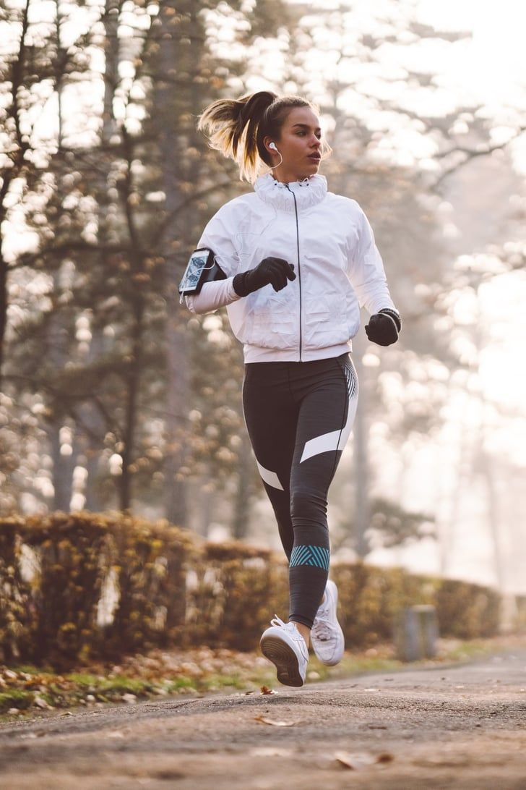
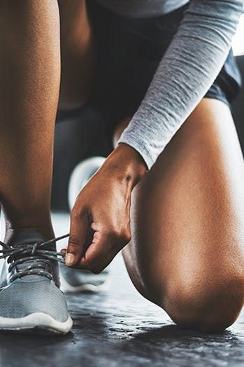

Exercise improves fitness, increases insulin sensitivity, maintains bone health, helps in weight management, and improves sleep patterns. Exercise can help lower blood glucose levels, which is why exercising in the morning or after a meal might naturally help to lower any higher blood glucose levels.
People with diabetes are encouraged to exercise regularly for better blood sugar control and to reduce the risk of cardiovascular diseases.
The reason for this is that muscles which are working use more glucose than those that are resting.
Muscle movement leads to greater sugar uptake by muscle cells and lower blood sugar levels.
Additional benefits of exercise include a healthier heart, better weight control and stress management.
Exercise is the common term used to describe any bodily activity that enhances or maintains physical fitness and overall health and wellness.
Besides strengthening the cardiovascular system and the body’s muscles, many people exercise to keep fit, lose or maintain a healthy weight, sharpen their athletic skills, or purely for enjoyment.
Frequent and regular physical exercise is recommended for people of all ages as it boosts the immune system and helps protect against conditions such as:
In the UK, regular exercise is defined by the NHS as completing 150 minutes of moderate intensity aerobic activity a week.
Aerobic activity at moderate intensity basically means exercising at a level that raises your heart rate and makes you sweat. This includes a multitude of sports. For example;
There are some exercise precautions which people with diabetes must take, however, when done safely, exercise is a valuable aid to optimal health.
Exercise precautions are designed to help people with diabetes avoid problems which can result from unwise exercise choices.
Hypoglycemia can occur if a person who is taking blood sugar lowering medication has: